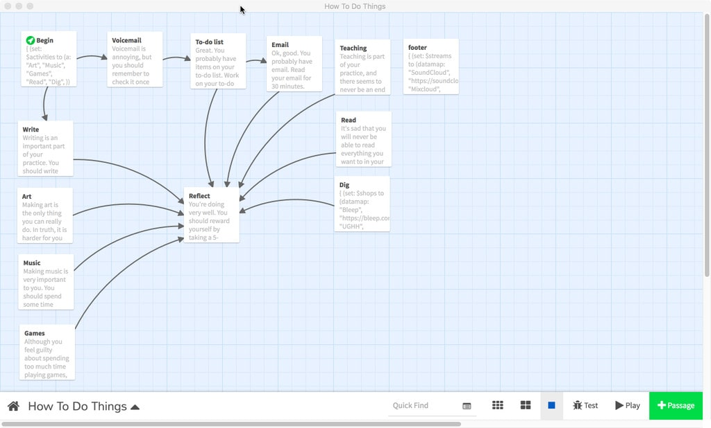
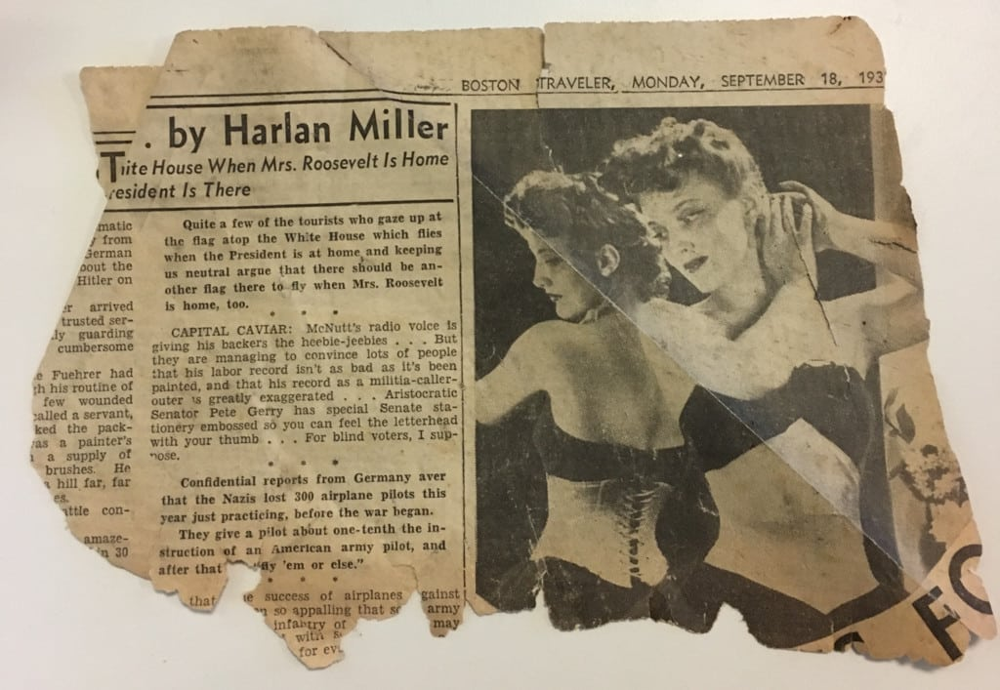

You can't put ten pounds of shit in a five-pound bag.
Probably like a bunch of creative folks out there I've got a to-do list a mile long, thousands of unread emails (currently I'm at 16k+), and a calendar that leaves little room for things like eating and sleeping. I'm also the kind of person that needs to wander: creatively, mentally, and physically. If I don't make time to wander, it'll happen anyway; I'll get distracted and unable to focus. However like everybody else I have only so much attention I can pay out to things.
If you are like me, you've tried a number of different systems, methods, and strategies for managing your time. It's a kind of art form in itself. I've also gone in the other direction completely, letting myself wander and letting go of attachment to time and just doing whatever, whenever. And probably this is actually the right thing for me to do. However, I don't have the luxury to spend all my time wandering, so I have to spend a good chunk of my time doing shit.
Sometimes the shit is really shit, and sometimes it isn't, but from the objective standpoint of a system it's all just a set of things to pay attention to. So it becomes the job of the system to determine how much attention to pay to what and when so things are managed and maintained properly.
"When all you have is a hammer…"
With the exception of the occasional appointment, this problem space for me only truly exists in the digital domain. In the studio I don't have this problem — I simply do things and I'm perfectly happy. Unfortunately, given my circumstances if I spend all my time in the studio I won't have money to pay the rent on said studio or buy things like food. So I need to check email and prepare for classes and such things.
Since this is essentially a system design problem in a digital domain, I decided to treat it as a digital game design challenge. Basically what I'm dealing with is simple state machine logic — start at A, proceed to B, then C or D based on some criteria. The format I wanted was something like a choose-your-own-adventure book (with minimal choices), so I decided to use Twine. I started thinking about various tasks/activities and how I wanted to navigate between them.

Twine is a great tool for this sort of thing, where the branching logic is relatively simple and has discrete steps. Being text-based, it also means I have an interesting opportunity to write objectively to myself. This actually works quite well. I can write "you are doing a great job" and my brain will go "I am doing a great job" and I'll feel more satisfied than if I were just checking a box on a to-do list.
The system also calls into question the value of various activities relative to the time spent. When I first built the system I weighted all things equally to see how it'd work. I set the "game" up so that I would write first, because I really haven't been doing enough writing, and if I don't make time for it, it'll never happen. So I would write for 30 minutes (usually 10-20 minutes of staring at the screen and 10 minutes of actual writing). Then I would go into frog-eating mode and jump on "work-related" activities like email and lesson-planning. I like the Pomodoro Technique, so I try to work in 30-minute chunks with breaks in-between.
Equal weighting means I would spend just as much time on email as I would on art, or music, or any other creative work. So if time equates to value (which is a common view of time in industrialized society), then email becomes just as valuable as art-making, at least as far as the system is concerned. I don't personally agree with this at all, but for the sake of the experiment I feel obliged to see how it plays out.
What Worked and What Didn't
Not surprisingly, my writing practice was going fairly well. I was writing almost every day (I would reset the system daily, so writing would bubble to the top). I no longer felt like I wasted my whole day on email, and rather than continue to kick creative projects down the road, I would carve out time to work on them.
Unfortunately this resulted in having email pile up and lesson-planning languish. The sad truth is email comes in faster than I can process it, hence the 16k+ unread emails in my inbox. There are also the read emails that need some kind of follow-up, adding more to the pile. I was also teaching six different classes in three different places, which created another seemingly endless stream of work.
Sharpening the Saw (or Polishing a Turd)
I decided to pay more attention to "work" activities and less to "things that don't look like work". The first step was to lump all the "activities that don't look like work" together into a single sub-cycle, which meant I would proceed through each "work" activity (email, lesson-planning, etc.), then spend time doing a single "non-work" activity (writing, art, music, research, etc.), then cycle back through all the work activities (and repeat).
However, what seemed to happen (anecdotally as I have not been consistently tracking activity data) is I simply never got around to doing any non-work activity. I basically on average would get three pomodoros into each "digital workday", regardless of activity. Side note: there isn't a strict 1:1 relationship between pomodoros and time, since I often finish up the task I'm working on or get to a good stopping point before moving on to the next activity.
Work and Non-Work
It appears that on-average using a sub-cycle of non-work activities doesn't make any difference and merely devalues non-work activities within the context of the system. Worse, I stopped writing regularly, and much of my efforts here are to increase the regular attention paid to non-work activities by limiting regular attention paid to work.
Solidarity
A recent conversation about the effects of gentrification on artists (and vice versa) moved from discussing the obvious problems of space/housing to the inevitable question…
"How do we put the brakes on it?"
Artists and culture-workers have been viewed as both the vanguards and victims of gentrification, although this is more complicated than it would seem. Regardless of how artists affect or are affected by gentrification, we can certainly do something about it. Perhaps what we need is to foster solidarity between artists, both within themselves and with other marginalized groups.
Boston is a city of fragmentation. Neighborhoods are mentally and physically cut off from each other. Culture-workers are nested in scattered pockets around the city and are generally too focused on their own backyard to think about what's happening next door.
Bringing artists together is a bit like herding cats, but like most things it just takes work. Organizing is key, so how do we organize? I think first and foremost we need to simply be present.
Show up
Attending gallery openings and artist talks, participating in open studios, and talking to each other face-to-face is the foundation of solidarity.
Speak up and listen up
Acknowledging our struggle and telling people about it spreads awareness of our cause, but also know when to listen, especially to those whose voices are historically under-/mis-represented (women, POC, the poor, et al). Empathy needs to go both ways in order to affect change. And without empathy, solidarity is powerless. We need to be able to think about how others are affected to have an inclusive and unifying platform. Without empathy, we cannot combat the othering that runs rampant in our city (and elsewhere).
Reach out
Think about how you can connect with other culture-workers outside your circle of friends. Help each other. Promote each other's events. Be an amplifier for small voices.
If we can start creating systems of support, we can create solidarity, and then create change. Otherwise we will continue to remain isolated and disempowered.
Fail Harder (Not Just Faster)
Recently I was invited to a student-run group meeting where current digital media students and recent graduates gave some excellent presentations about things they had learned and advice for other students. Much of it was spot-on: why homework should be treated as opportunity, being a proactive learner, etc.. I was also invited to say a few words of my own. I accepted, even though I was completely unprepared to do so, but there were some themes to the presentations I wanted to highlight (and some warnings I wanted to give).
Curiosity
Following own's heart, nose, inner voice, etc. is the key to everything. One of the fundamentally broken parts of our educational system is how gaining knowledge is presented as an obstacle to be surmounted instead of its own reward. I have students who fail to complete homework because they are required to take my class and it isn't in their area of focus. They simply aren't curious about what I am teaching. Would it be so terrible to simply let students choose what they want to learn?
Design
I think design is about defining and expressing purpose. A well-designed tool is true to its purpose. The same goes for human beings. We are the designers of our lives, defining and expressing our purpose. And our curiosity guides us towards our purpose. But unlike the purpose of a tool, I believe our purpose is a shifting, mercurial thing. We think we have found it, but then we feel like it's elsewhere. This is not surprising — we grow and change with experience. As we experience new things, we learn more about what works and what doesn't. Unfortunately, I think a by-product of our consumer society is that we are often presented with solutions, and we spend too much effort trying to make our problems fit the solutions. We are told the "why" and the "how" instead of coming to our own conclusions. I am still new to teaching, but one thing seems true: education is more about providing a means for exploration than it is about mechanics and information.
Jobs
Part of the problem I struggle with in my teaching is the false truth of education being a path to employment being a path to well-being. Not that it is 100% false, but it is completely subjective. One of the digital media students in the group asked whether it was important to focus on learning one particular software application versus learning many in various domains, in order to get a job. I explained that most job descriptions in my experience aren't actually written by people who know what they need (they either don't know what they need or they are not the ones doing the actual hiring evaluation). I argued if a company wasn't willing to let you learn on the job, you should find another company, because they aren't investing in you as a person. Whether someone knows Photoshop or Sketch or not is far less important than whether they are a good designer or not.
I told the students how the word "career" relates to "careen", and detailed my own twisty path from job to job. I explained how I kept trying different things to find my purpose. I'm still trying. And trying means failing. A lot.
Success
It has been said to "fail fast, fail often", but I would add we should also fail harder. Let the failure risk as much as possible to destroy all things outside our purpose. Push all the envelopes! Test all the possibilities! It's not enough to say something won't work — you have to prove it!
Snow Day
Yesterday was a snow-day for the public school system. The schools were closed and road conditions were unsuitable for driving or walking. Presumably, people should stay off the roads to allow trained crews to remove snow and clear sidewalks. So why don't we all just have a snow-day?
Imagine you work at an office job. The weather is crap, and driving is going to suck. At best it'll be slow, at worst there will be an accident due to poor road conditions. Or maybe you take public transportation, in which case the sidewalks are going to be slippery and buses will be delayed. If you are in a wheelchair, it would be even more difficult.
Imagine the only way you can work at your office job is because your kids are in school during the day. The school is closed, so you have to stay home with your kids. Maybe you can work from home, maybe you can't. Maybe you have to take a personal day to avoid losing pay. Maybe you fall behind on your work and your "performance" is affected.
Imagine your job is to clear the roads of snow and ice. The snow is falling fast and you are trying to keep up with it, but there is traffic from people trying to get to their office jobs. Maybe there is an accident you have to work around.
Imagine instead non-critical systems are closed due to the weather, and we all simply accept this as the most reasonable thing to do. You stay home, hang out with your kids, shovel your driveway, and help your neighbors. You aren't punished by your job because this is "the most reasonable thing to do". The road crews get their work done quickly and efficiently because there are fewer vehicles on the road. Ambulances, fire trucks, and buses (yes public transit is a critical system) aren't slowed by traffic or accidents.
So why don't we all just have a snow-day?
Gentrification is Displacement
There are plastic signs zip-tied to lamp-posts in my neighborhood with the words "COMPRAMOS CASAS" ("WE BUY HOUSES") on them. I've seen similar signs, "I Buy Houses CA$H" et al. East Boston is referred to as "one of the hottest real estate markets". The COMPRAMOS CASAS signs appear to be put up by Aquasvivas Creative Real Estate Buyers, LLC — their website address and phone number are printed on the signs.
Their website presents them as being sympathetic and helpful to people who are "unable to keep their homes", but these people are simply vultures looking to profit off the misfortune of others. Instead of actually helping people keep their homes and prevent displacement, or act as an agent to help them get the most value for their home through a sale, they are seeking to take advantage of the real estate market boom by flipping the houses they buy. Logic dictates that the homeowners would never actually get fair market value for their home by selling to these people, and they have no interest in helping people accomplish this through a partnership or by providing any kind of service.
If you see these signs, take them down. Many are posted illegally anyway and these companies are a threat to your communities. Shame these companies on social media. Counter them with advertisements in local newspapers and posted flyers. Encourage neighbors to seek FREE help from programs like Making Home Affordable or discuss other options like conversion to affordable rental housing, selling to a local housing co-op, or at least selling through a qualified real estate agent.
Gentrification is a real threat which should not be whitewashed as "progress" nor accepted as the natural order of things. Displacement is unnatural, oppressive, and destructive to communities, especially communities of color. Fight against it.
Increase the Peace
Last night I watched Boyz n the Hood for the first time. In the early nineties I cut myself off from mainstream media, so there are a number of movies from that time period which I totally missed. Boyz n the Hood (released in 1991) was one of them.
One of the opening scenes depicts a Reagan re-election campaign poster riddled by bullets. Although the film is full of gripping, insightful scenes, this one is deeply disturbing to me in a way I had not felt in years. Folks who grew up in the eighties might recall the hopelessness and madness of the Reagan administration. The implosion of the counter-culture in our recent history, the AIDS crisis, the Ethiopian famine, the insanity of trickle-down economics, and the threat of nuclear war created an atmosphere of dystopia that made the thought of growing up miserable.
Don't be told what you want
Don't be told what you need
There's no future
No future
No future for you
– God Save The Queen, The Sex Pistols
A nice lady on a plane once told me that my generation ("Gen X") was waiting for a bus that would never arrive. We were raised with a promise of prosperity if we worked hard and played along. Trust the system. The same system that was letting corporations poison the planet, imprisoning people of color behind bars or in poverty, de-funding social services, war-mongering at home and abroad, and marching us all toward assured mutual destruction? No fucking way. But what was the alternative? There wasn't one.
I was essentially radicalized at this time, but the form it took was counter-productive. I would bury myself in the fantasies of comic books and video games, trying to escape the feeling of powerlessness. I would vent through skateboard, pen, and punk. Never really getting anywhere because there was nowhere to go.
Since then, I have become more aware of just how broken "the system" is, both in terms of degree and manner, but I fight against the hopelessness every day. I fight because I realized that hopelessness is just a tool of oppression. We are made to feel hopeless, to feel that there is no future, so that we will not resist. Meanwhile, the "future" — i.e. the way we would have the world become — is taken from us by those who seek to control it.
The end of Boyz n the Hood shows the title with the words "INCREASE THE PEACE". While this could easily be seen as merely a call to young black men to work towards non-violence, I believe this call goes out to us all, not just to soothe the symptom, but to cure the disease. The system of oppression that created the world depicted in the film is the same system of oppression operating today.
No justice, no peace.
Increase the justice, increase the peace.
History
Yesterday I was walking from my studio to the train station and saw a scrap of newspaper on the sidewalk. This is nothing remarkable, but it caught my eye because the photograph seemed old, and the paper was yellowed with age. Upon inspection, the torn fragment was from the Boston Traveler dated September 18th, 1939.

Someone must have just cleaned out their basement or attic. I thought about how there was a person holding the newspaper from which this was torn in 1939, before my parents were born. "Hitler", "Fuehrer", "Nazis" appear in the text.
Quite a few of the tourists who gaze up at the flag atop the White House which flies when the President is at home and keeping us neutral argue that there should be another flag there to fly when Mrs. Roosevelt is home, too.
Amazing to think what it must have been like to be reading this at that time, just when World War II was beginning and before the United States became directly involved. I can't help but make comparisons to now, when no one knows what the future will hold, and the political climate seems terrifyingly bizarre. This photograph of the woman spooks me now, as she looks back at her reflection, the mirror of history displaying the laced binding of her corset — a garment of confinement and conformity. Slaves to ourselves, never able to escape the debt of our past, we risk repeating mistakes throughout time, lashed to the karmic wheel.
Neutrality is impossible.
Opportunity Knocks
I'm happy to announce that I am a recipient of an Opportunity Fund grant, which I am planning to use towards a new membership at Atlantic Works Gallery, a co-op gallery in my studio building in East Boston. I've been a supporter of AWG for a while now and love the community and the space, so I'm very excited to have the ability to apply (and pay!) for membership.
Writing about writing
I've been reading Anne West's Mapping the Intelligence of Artistic Work and thinking about writing in relation to my practice. So I'm revisiting writing as part of my practice. Words seem to be the most clinical tools in my work, even in the form of a poem. I was recently thinking about how sound, image, and language form a strata through which I ascend and descend as I make work.
Sound
Sound is the most primal, pure, and free. When I think about sound (and music, although music carries with it a cultural and historical weight that I am not addressing in my thoughts about sound), it is usually in response to an inability at the time to think about other things. I get depressed about various things, and I think about sound, because sound makes more sense than anything else at the time. And I hunger for its freedom and purity, and it's ability to surround, penetrate, and resonate. An emotion is closest to a sound, if an emotion takes a form (I think much in the way some artists think about color). Like emotion it alters perception and is altered by circumstance. Sound crashes into context and reverberates against it, transformed and distorted by the surface.
Image
Image floats above sound. It vanishes when eyes are closed and gazes are averted, or absolute darkness or lightness obliterates it. It persists only in memory after the signals in retinal receptors fade. It asks of us to look upon it. If we ignore it, we do not see it. Sound comes to us, whereas image requires our approach. Image always emanates cultural and historical energy. We attempt to decipher it first and foremost, classifying it and categorizing it. We can only perceive it as form by deliberately letting our minds stop decrypting the meaning, and then it either sinks into banality or sits on the surface of beauty. An image without meaning, as simple form, becomes an inaccessible fortress.
Language
Language is a slippery fish. It can be sound or image or both. It implies an absolute perfection but is a complete illusion. It is merely a key to a box that can be opened and looked into, but never entered. And every individual has their own box, and the boxes are at once the same box yet different. Language permeates through all things, trickling between the cracks and flowing along the surface. It defines and it is defined constantly. It is a machine ever creating itself. It can reinforce, and it can erode all meaning and understanding.